第1章 Android基础入门¶
1.2 搭建Android开发环境¶
特定 Android API 级别所要求的最低工具版本：
| API级别 | 最低Android Studio版本 | 相关链接 |
|---|---|---|
| 34（Android 14） | Android Studio Flamingo | 2022.2.1 | link |
| 33（Android 13） | Android Studio Chipmunk | 2021.2.1 | link |
| 31（Android 12） | Android Studio Arctic Fox | 2020.3.1 | link |
| 30（Android 11） | Android Studio 4.2 | link |
| 29（Android 10） | Android Studio 3.3 | link |
| 28（Android 9） | Android Studio 3.2 | link |
1.2.1 安装Android Studio¶
- 下载Android Studio 3.2.0
要求操作系统为Windows 64位系统，JDK版本不低于1.7，系统空闲内存至少为2GB。下载地址：Android Studio 下载文件归档 | Android Developers (google.cn)、android-studio-ide-181.5014246-windows.zip、android-studio-ide-181.5014246-windows.exe。
- Android Studio安装过程
双击.exe文件进行安装。注意修改安装路径。参考官方文档。
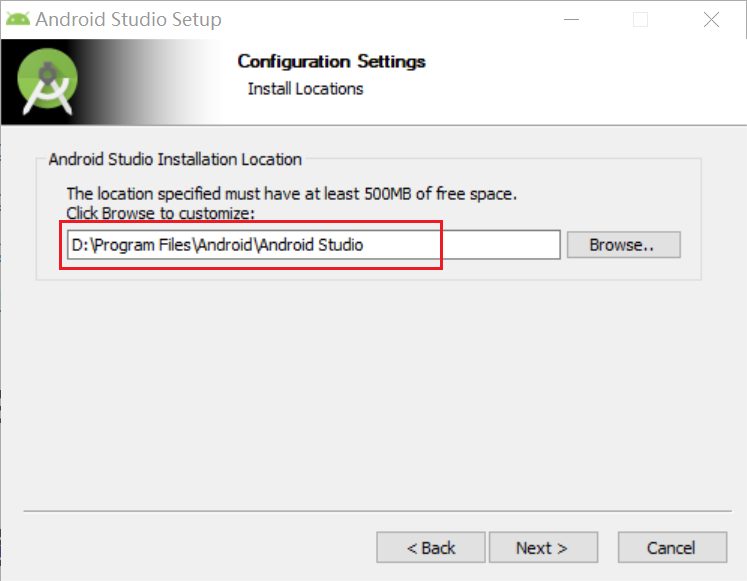
- 配置Android Studio
（1）安装完成后，启动Android Studio，在以下窗口中选择不导入配置信息。
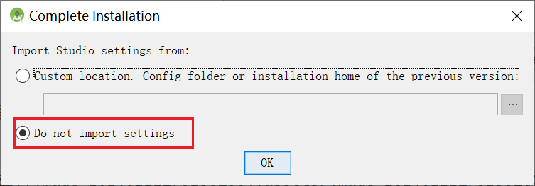
（2）在弹出的窗口中点击”Cancel“按钮。
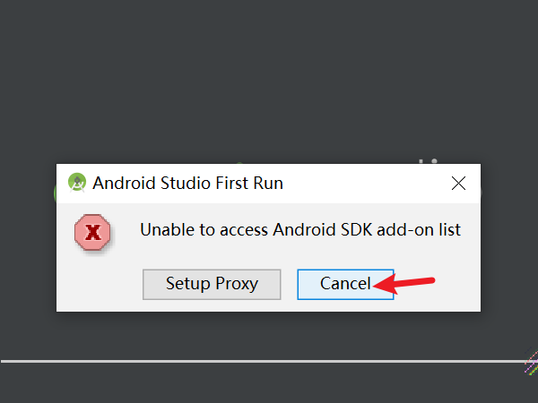
（3）一直”Next“到Install Type页面，设置UI主题并选择”Custom“指定SDK安装路径，这里默认会安装最新版SDK且不能修改SDK版本。
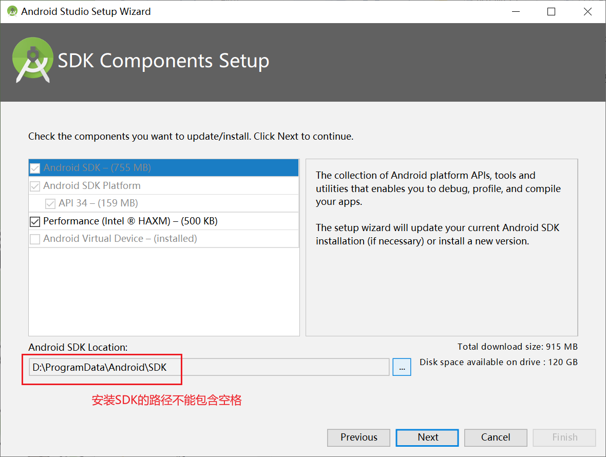
（4）一直点击”Next”直到配置完成。
注意：新建的配置信息会保存到 C:\Users\<user>\.AndroidStudio3.2 文件夹，此文件夹下在卸载时不会自动删除，建议卸载完成后手动删除该文件夹，避免下次安装出现问题。完全卸载Android Studio教程：完全卸载Android studio教程_android studio如何彻底卸载重装-CSDN博客。
1.2.2 在Android Studio中下载SDK¶
下载SDK 9.0及相应的Tools。
（1）打开SDK Manager。
打开Android Studio，点击右下角【Configure】→【SDK Manager】。
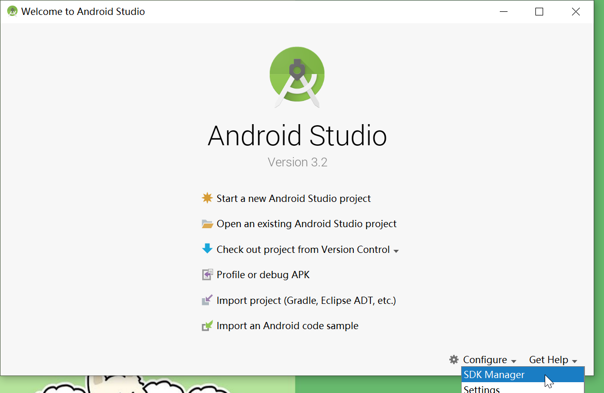
（2）下载SDK。
在打开窗口中“SDK Platforms”选项卡下选择Android 9.0 (Pie)，点击“OK”按钮进行下载。
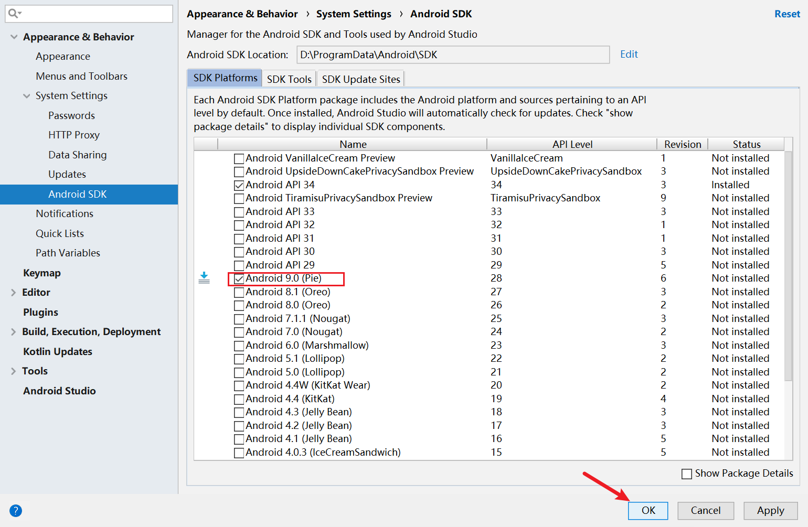
（3）下载Tools。
Android 9.0对应的API级别是28，因此需要下载版本号以“28”开头的的SDK Tools，点击“OK”按钮进行下载。

（4）删除掉最新版本的SDK及Tools。方法为去掉相应版本前的对勾，然后点击“OK”按钮。
1.2.3 创建模拟器¶
1.2.3.1 创建Android Studio 自带的AVD模拟器¶
（1）通过创建 ANDROID_SDK_HOME 环境变量指定AVD保存路径（AVD默认会下载到C盘；ANDROID_SDK_HOME示例值：D:\Softwares\Android\AVD）。参考更改Android Studio中AVD的默认路径-CSDN博客
（2）从Gradle Distributions下载gradle-4.6-all.zip，放到%GRADLE_USER_HOME%\wrapper\dists\gradle-4.6-all\bcst21l2brirad8k2ben1letg目录中（GRADLE_USER_HOME示例值：D:\ProgramData\Android\.gradle）。参考Android Studio 中 gradle 下载失败的解决办法-CSDN博客。
（3）使用Android Studio创建一个Android项目。（详细步骤参见1.3节内容）
注意：如果没有预先安装SDK 9.0，此时项目会编译失败，原因是Android Studio 3.2.0最高只能支持到SDK 9.0，而安装Android Studio 3.2.0的过程中默认仅下载了最新版本的SDK，因此无法进行编译。
（4）打开项目后在单击顶部导航栏中的【AVD Manager】创建模拟器。选择【Phone】类型的【Nexus 4】设备，并下载Pie版本（Android 9.0；API 28）系统镜像。
1.2.3.2 第三方模拟器：雷电模拟器、夜神模拟器¶
- 雷电模拟器
（1）下载雷电模拟器：雷电模拟器9.0
（2）双击下载好的.exe文件进行安装。安装完成后默认会创建一个安卓模拟器并启动，启动后Android Studio中就可以自动连接上。
- 夜神模拟器 （不推荐）
（1）下载夜神模拟器：nox_setup_v7.0.5.9_full.exe。
（2）双击下载好的.exe文件进行安装。（需要关闭Hyper-V）
（3）打开模拟器助手，创建Android 9模拟器。
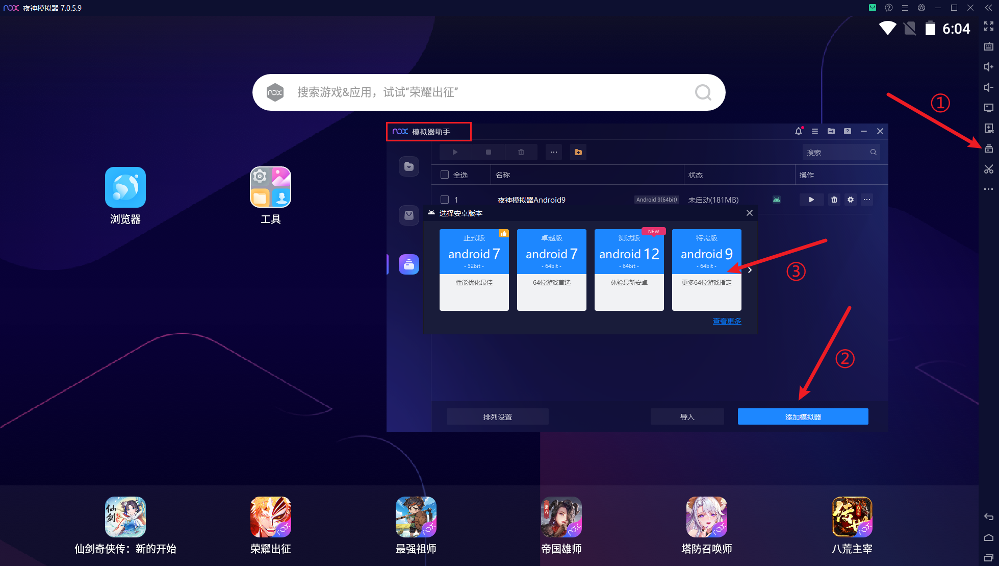
（4）启动夜神模拟器Android 9。
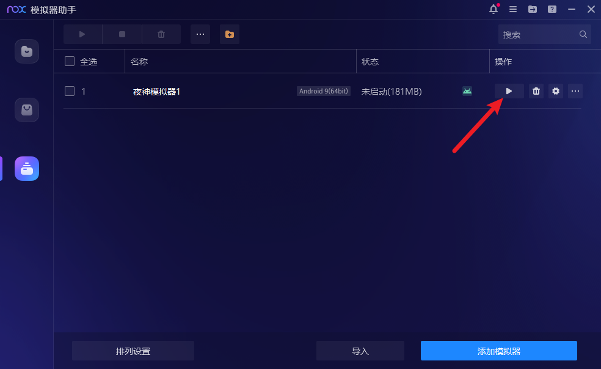
（5）连接夜神模拟器。
win+R 启动CMD命令后，cd到夜神安装目录，我的目录是D:\Program Files\Nox\bin下。先执行nox_adb devices查看设置端口号（默认为62025），然后执行命令nox_adb.exe connect 127.0.0.1:62025连接到模拟器。
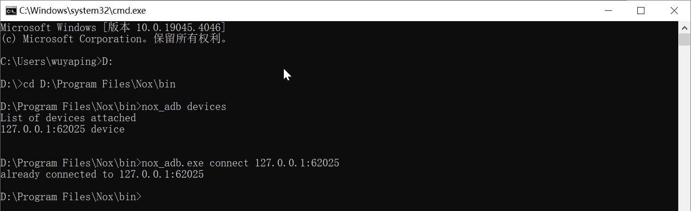
运行项目时即可选择夜神模拟器。
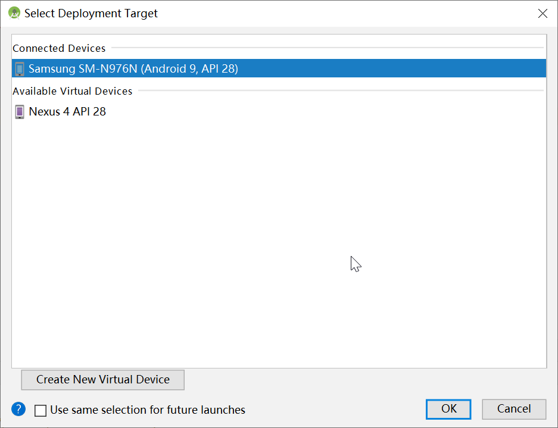
1.2.3.3 真机模拟器¶
参考资料：
- Android Studio 模拟器的选择和安装 - 知乎 (zhihu.com)
- Android Studio的下载、安装及配置教程(自带模拟器与夜神模拟器调试)_android studio的模拟器下载游戏-CSDN博客
- 如何创建不同安卓版本/位数的模拟器？ | 夜神模拟器帮助中心 (yeshen.com)
- 无法连接夜神模拟器，unable to connect to 127.0.0.1:62001-CSDN博客
- android studio使用雷电模拟器-CSDN博客
- 雷电模拟器绿色版下载
1.3 开发第一个Android程序¶
1.3.1 创建Hello World程序¶
1.3.2 在已有项目中新建Module¶
1、在Project窗口中空白处右键，选择【New】→【Module】。
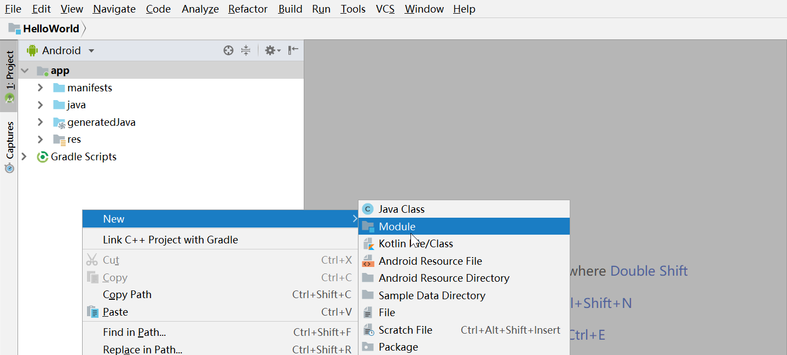
2、在打开的窗口中选择Phone & Tablet Module，点击“Next”按钮。
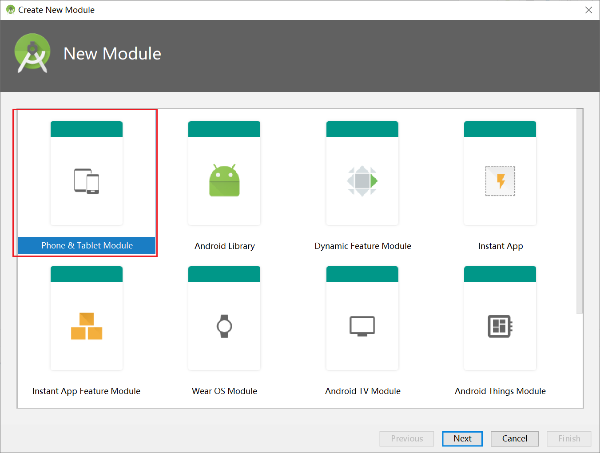
3、Application/Library name是应用的名字（在桌面用户看到的名字，可以为中文），Module name是在android studio目录下显示的名字 。
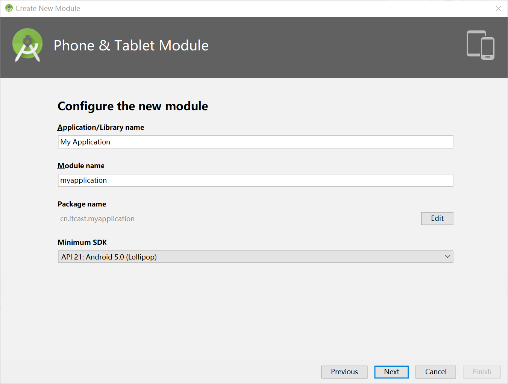
4、后续步骤一直点击“Next”按钮，最后点击“FInish”完成创建。
1.3.3 构建离线开发环境¶
联网环境下生成的gradle仓库不能直接复制离线环境下使用，为了在无法联网的环境中构建项目，需要创建gradle的离线仓库。本文中采用的方法是先将联网环境下生成的gradle仓库转换成maven本地仓库，然后将maven本地仓库配置为离线环境中的gradle的下载源。
- 联网环境中将项目构建成功后，将Gradle工作模式切换为离线模式。
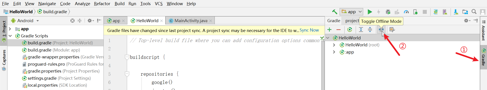
- 将gradle仓库转换成maven仓库。
然后在项目的build.gradle文件最后添加一个task，将jar包从gradle的缓存目录转移到maven本地仓库，gradle的缓存目录一般默认在%GRADLE_USER_HOME%\caches\modules-2\files-2.1\。具体代码如下：
task cacheToLocalMavenRepository(type: Copy) {
// gradle缓存目录
from new File('D:\\ProgramData\\Android\\.gradle\\caches\\modules-2\\files-2.1')
// maven本地仓库路径
into 'D:\\ProgramData\\Android\\m2repository'
eachFile {
List<String> parts = it.path.split('/')
it.path = (parts[0]+ '/' + parts[1]).replace('.','/') + '/' + parts[2] + '/' + parts[4]
}
includeEmptyDirs false
}
再在Terminal中执行这个task，命令为gradlew cacheToLocalMavenRepository。
执行完成后，jar包就转移到了本地maven仓库中。
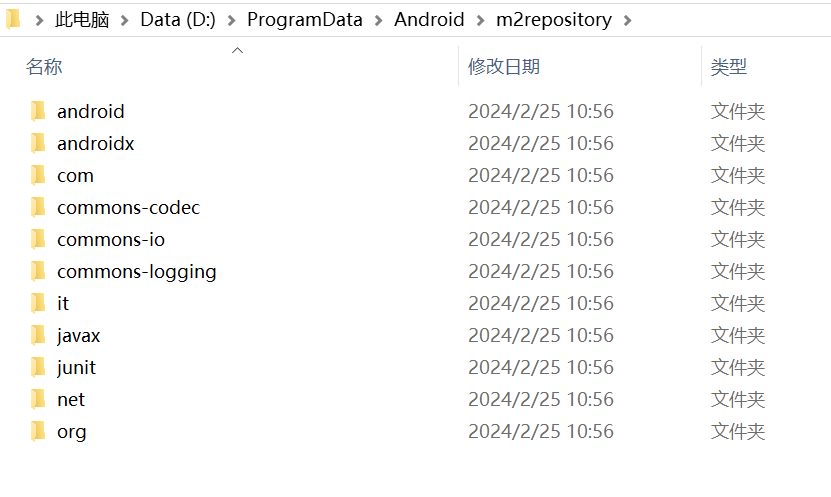
- 将gradle下载源配置为maven仓库。
在项目的build.gradle中修改gradle的下载源，首先注释掉默认的网络下载源，然后将本地maven仓库配置为新的下载源。具体代码如下：
buildscript {
repositories {
// google()
// jcenter()
// 配置本地maven仓库
maven{
url 'file:///D://ProgramData//Android//m2repository'
}
}
dependencies {
classpath 'com.android.tools.build:gradle:3.2.0'
// NOTE: Do not place your application dependencies here; they belong
// in the individual module build.gradle files
}
}
allprojects {
repositories {
// google()
// jcenter()
// 配置本地maven仓库
maven{
url 'file:///D://ProgramData//Android//m2repository'
}
}
}
配置完成后，点击“Sync Project with Gradle Files”按钮。此时，build可能会失败。
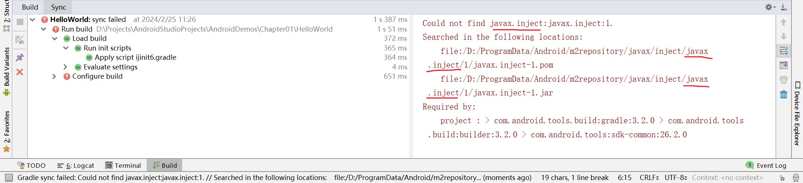
报错信息显示有个包找不到，这是因为在将gradle仓库中的jar包转移到maven仓库时，使用“/”将包名中的“.”切分成了路径，导致包名中带“.”的包（“javax.inject”）转换有误，此时需要手动去maven仓库中进行调整。
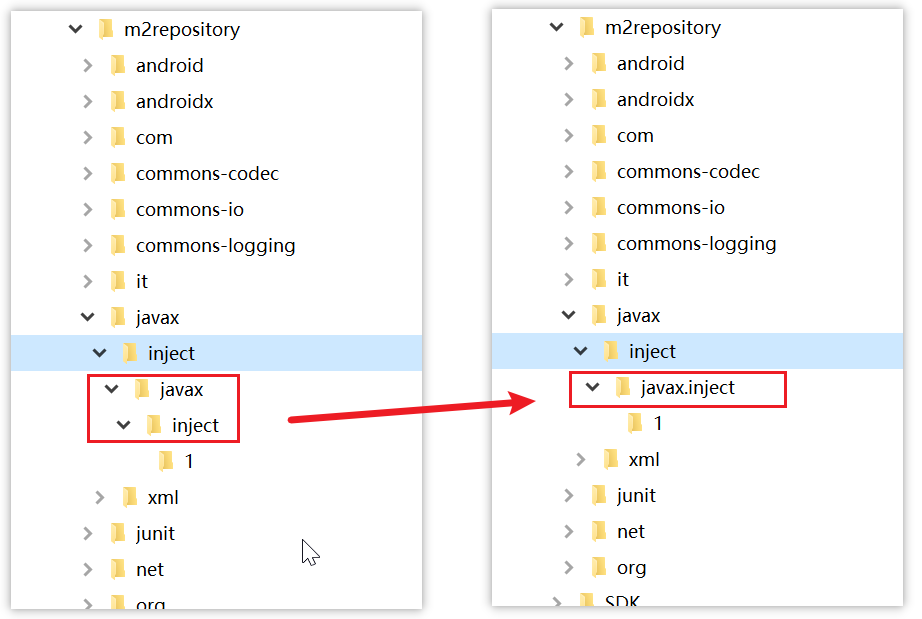
调整完成后，再重新进行同步，如果出现类似错误采用相同方法解决即可。
- 使用gradle初始化脚本配置本地仓库地址。
在USER_HOME/.gradle或者GRADLE_HOME目录下创建一个init.gradle文件，内容如下：
allprojects {
repositories {
maven { url 'file:///D://ProgramData//Android//m2repository'}
}
}
添加此文件后，在项目中使用gradle构建时，会优先从该文件配置的仓库中下载所需依赖。
参考资料：
- gradle和maven能否共用本地仓库？gradle使用maven本地仓库又是什么？ - 简书 (jianshu.com)
- 将Gradle缓存的jar包转移到maven本地仓库-CSDN博客
- android studio构建离线环境以及uniapp离线打包_哔哩哔哩_bilibili（8:44）
- gradle使用阿里源及设置初始化脚本_initialization script gradle-CSDN博客
1.5 资源的管理与使用¶
Android程序中的资源都保存在res目录下，这些文件最终都会被编译到R文件中，R文件中针对不同类型的资源会生成相应的类用于保存资源id，R文件具体位置如下图所示。
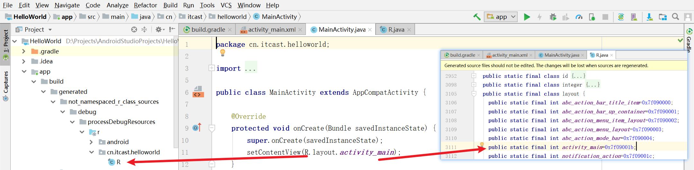
1.5.1 图片资源¶
图片资源存放在res目录下的mipmap（应用图标）和drawable（界面中使用的图片）开头的目录中。
drawable资源可以使用图片资源，也可以使用xml文件资源。常用的drawable资源有图片资源和StateListDrawable资源两种。
根据设备的不同尺寸，Android中的图片资源存放在对应名称（mdpi hdpi xhdpi xxhdpi xxxhdpi）的文件夹中。但是同时保存不同尺寸的图片占用的空间会很大，为了节省空间，可以只保存分辨率最高的图片。
参考资料：Android开发小技巧-图片资源管理 - 掘金 (juejin.cn)
由于res目录中的资源在编译后才会在R文件中生成对应的id值，因此在项目中添加图片后，需要先点击【Build】→【Rebuild Project】进行重新编译，再引用相应的资源。
练习题：在AndroidManifest.xml文件中将应用图标修改为fengche.png。
图标资源可在iconfont-阿里巴巴矢量图标库下载。下载图标时应根据实际需要选择图标大小。例如：Nexus 4的屏幕密度是xhdpi，应下载尺寸为96x96的图标，下载后放置到项目中对应的资源文件夹（res/mipmap-xhdpi）中。
不同大小屏幕对应的图标尺寸如下：

扩展阅读：
- Android Studio制作分辨率适配图标-CSDN博客
- .9.PNG是啥？ - 知乎 (zhihu.com)
- 合理使用 selector，彻底告别手动改变 drawable、color - 简书 (jianshu.com)
1.5.2 主题和样式资源¶
主题和样式主要用于定义安卓界面元素的显示风格。
1. 主题¶
主题主要用于设置整个项目或Activity的显示风格。主题资源定义在 res/values 目录下的 styles.xml 文件中，示例代码：
<!-- style标签用于定义主题。
name：主题名称；parent：指定Android提供的父主题 -->
<style name="AppTheme" parent="Theme.AppCompat.Light.DarkActionBar">
<!-- item标签用于设置主题的样式 -->
<item name="colorPrimary">@color/colorPrimary</item> <!-- 标题栏颜色 -->
<item name="colorPrimaryDark">@color/colorPrimaryDark</item> <!-- 状态栏颜色 -->
<item name="colorAccent">@color/colorAccent</item> <!-- 控件被选中时的颜色 -->
</style>
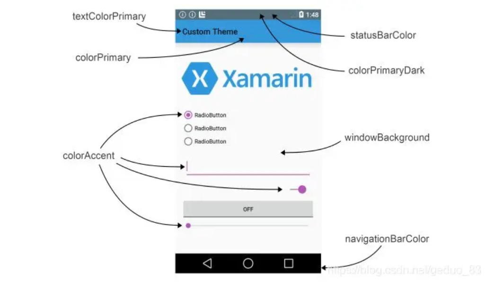
设置主题的方式有两种。
（1）在AndroidManifest.xml文件中设置主题。
<!-- 设置整个App的主题 -->
<application android:theme="@style/AppTheme">
</application>
<!-- 设置某个Activity的主题 -->
<activity android:theme="@style/AppTheme">
</activity>
（2）在Java代码中设置（Activity的）主题。
protected void onCreate(Bundle savedInstanceState) {
super.onCreate(savedInstanceState);
setTheme(R.style.AppTheme); //要在setContentView之前设置
setContentView(R.layout.activity_main);
}
2. 样式¶
样式主要用于设置View控件的显示风格。样式也存放在 res/values 目录下的 styles.xml 文件中，定义方式与主题类似。示例代码：
在布局文件中引用textViewStyle的代码示例：
<TextView
android:layout_width="wrap_content"
android:layout_height="wrap_content"
android:text="Hello World!"
app:layout_constraintBottom_toBottomOf="parent"
app:layout_constraintLeft_toLeftOf="parent"
app:layout_constraintRight_toRightOf="parent"
app:layout_constraintTop_toTopOf="parent"
style="@style/textViewStyle"/>
注意：android的样式采取和css中一样的覆盖、继承原则，如果一个TextView自己设置了样式，它的ViewGroup设置了样式，activity设置了主题，application设置了主题。它会先读取自己样式的值，对于自己没有的样式向上查找第一个找到的值即为要采取的值。原文链接：https://blog.csdn.net/OnlyOneCoder/article/details/8536814。
练习题：
- 定义一个主题
MyTheme，设置父主题为Theme.AppCompat.Light.NoActionBar，item标签与AppTheme主题的保持一致，运行HelloWorld项目，观察界面显示风格。 - 按照课本的代码定义
textViewStyle样式并应用到布局文件中。
扩展阅读：
1.5.3 布局资源¶
布局资源通常用于搭建程序中的各个界面。布局资源在res/layout目录中创建，新建项目时默认会创建一个activity_main.xml的布局文件。
调用方式：
- 通过java代码调用
- 通过xml文件调用
先创建一个新的activity文件，方法为在res/layout目录上右键，选择【New】→【XML】→【Layout XML File】，在弹出的窗口中设置布局名称（Layout File Name）为 layout_test，布局的根节点（Root Tag）使用默认值 LinearLayout，点击【Finish】。
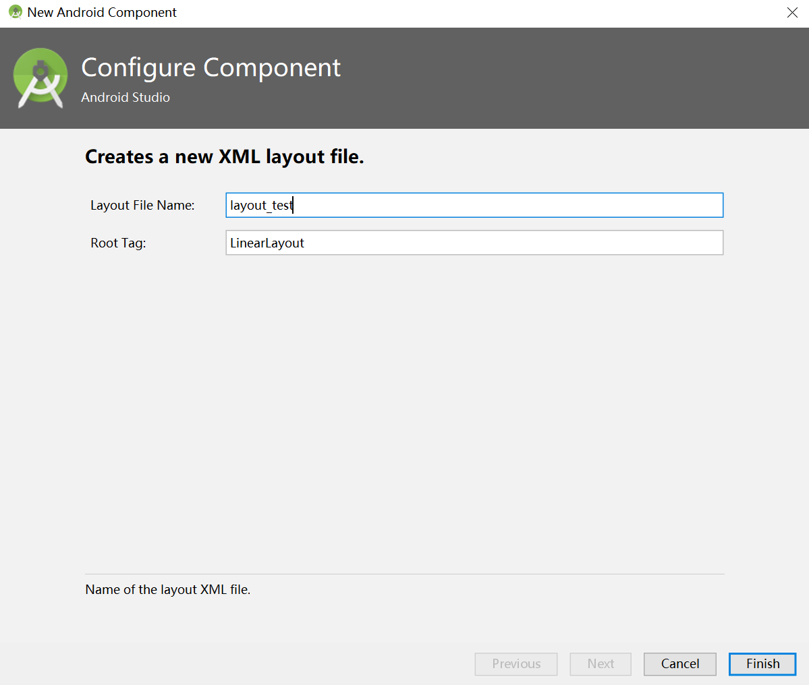
创建完成后，在创建好的新activity文件（layout_test.xml）中使用<include>标签调用 activity_main.xml 布局资源。
<?xml version="1.0" encoding="utf-8"?>
<LinearLayout xmlns:android="http://schemas.android.com/apk/res/android"
android:layout_width="match_parent"
android:layout_height="match_parent">
<include layout="@layout/activity_main"></include>
</LinearLayout>
1.5.4 字符串资源¶
字符串资源在res/values/strings.xml文件中定义。示例代码如下：
字符串资源的调用方式有两种：
- 在Java代码（MainActivity.java）中调用
protected void onCreate(Bundle savedInstanceState) {
super.onCreate(savedInstanceState);
setContentView(R.layout.activity_main);
//在Activity的onCreate()方法中调用名为 app_name 的字符串资源
getResources().getString(R.string.app_name);
}
- 在XML布局文件（activity_main.xml）中调用
<!-- 设置文字内容为名为 app_name 的字符串资源 -->
<TextView
android:layout_width="wrap_content"
android:layout_height="wrap_content"
android:text="@string/app_name"
app:layout_constraintBottom_toBottomOf="parent"
app:layout_constraintLeft_toLeftOf="parent"
app:layout_constraintRight_toRightOf="parent"
app:layout_constraintTop_toTopOf="parent"/>
练习题：根据课本中提供的代码进行练习。
1.5.5 颜色资源¶
颜色资源通常定义在res/values/colors.xml文件中，示例代码如下：
<?xml version="1.0" encoding="utf-8"?>
<resources>
<color name="colorPrimary">#008577</color>
<color name="colorPrimaryDark">#00574B</color>
<color name="colorAccent">#D81B60</color>
</resources>
调用颜色资源的方法同样有两种。
- 在Java代码中（MainActivity.java）调用。
protected void onCreate(Bundle savedInstanceState) {
super.onCreate(savedInstanceState);
setContentView(R.layout.activity_main);
//在Activity的onCreate()方法中调用名为 colorPrimary 的字符串资源
getResources().getColor(R.color.colorPrimary)
}
- 在XML布局文件中调用。
<!-- 设置字体颜色为名为 colorAccent 的颜色资源 -->
<TextView
android:layout_width="wrap_content"
android:layout_height="wrap_content"
android:text="Hello World!"
app:layout_constraintBottom_toBottomOf="parent"
app:layout_constraintLeft_toLeftOf="parent"
app:layout_constraintRight_toRightOf="parent"
app:layout_constraintTop_toTopOf="parent"
android:textColor="@color/colorAccent"/>
练习题：
- 设置
TextView控件中的字体颜色为colorAccent。
1.5.6 尺寸资源¶
尺寸资源可用于定于View控件的宽高等，通常在res/values/dimens.xml文件中使用<dimen>标签定义。在Android Studio 3.2.0中，默认没有创建该文件，需要手动创建，创建方法为在res/values文件夹上右键，依次选中【New】→【XML】→【Values XML File】即可创建dimens.xml文件。
px（pixels，像素）：每个像素点对应屏幕上的一个点。
dpi（dots per inch，像素密度）：单位英寸上的像素数量。
dp（Density-independent Pixels，设备独立像素）：与屏幕无关的尺寸单位，图片大小单位。Android中的尺寸单位使用 dp 而不是百分比可以避免横屏时某些控件变形，详见Android屏幕适配之单位DP - 简书 (jianshu.com)。
安卓屏幕像素密度关系：
| 屏幕密度类型 | 分辨率（px） | 屏幕像素密度（dpi） | 像素比（px/dp） |
|---|---|---|---|
| 低密度（ldpi） | 240x320 | 120 | 0.75 |
| 中密度（mdpi） | 320x480 | 160 | 1 |
| 高密度（hdpi） | 480x800 | 240 | 1.5 |
| 超高密度（xhdpi） | 720x1280 | 320 | 2 |
| 超超高密度（xxhdpi） | 1080x1920 | 480 | 3（1dp=3px） |
| 超超超高密度（xxxhdpi） | 2160x3840 | 640 | 4 |
参考资料：